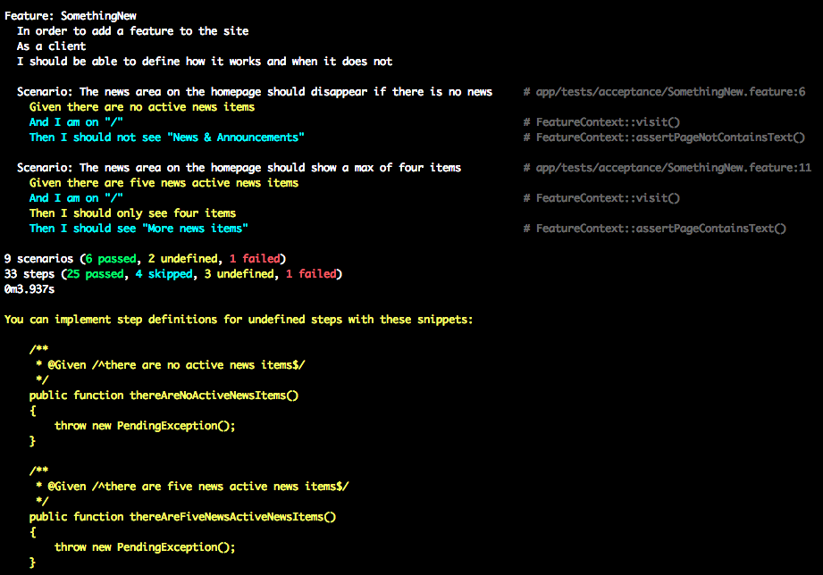

Agile workflow
Bringing Agile to Higher Ed Without Scaring Anyone
Nick DeNardis
Perpetual minimalist. User experience crafter. Speaker. Realist. Web Director at @waynestate. Library Scientist. Technical Director for @TEDxDetroit. Organizer for @hewebMI and @RefreshDetroit. @GDIdet teacher.
And... not a trained agilist
But I am a practitioner
Once upon a time...
I gave four people six months to reconstruct our website from the ground up
42 individual sites, 4,000+ pages, 250 templates, countless stakeholders
They did it!
And thus begins our journey...
Highered is built on processes
Let's embrace that
Context
This talk is about teams
2-10 people, local preferred
My team != Your team
Not a step by step guide
This talk is about Web software
Anything else you take away from it is a bonus
"Agency" with "Clients"
Managing a product could be it's own talk
And you..
Using any agile practices?
Who is using traditional waterfall?
Who oversees a team?
Who is on a team?
Who is the whole team?
agile, not Agile
Agile is short for "agility"
Agile Manifesto
Individuals and interactions over processes and tools
Working software over comprehensive documentation
Customer collaboration over contract negotiation
Responding to change over following a plan
“To heal the divide between business and development”
~ Kent Beck
Improve
No process or person is perfect
What's wrong with waterfall?
Semantic Diffusion
The original ideas, as they get passed from person to person get more diffused (more and more fuzzy).
Do we have to go all in?
Nope.
But all team buy-in is important
Everyone must be willing to try ideas for some time before dismissing them.
The starting point
Retrospectives
Start here if you do anything at all
Once a week, or every other week
It's about improving slowly over time
Four questions
- What went well?
- What didn’t go so well?
- What have I learned?
- What still puzzles me?
Repeat.
Individuals and interactions
Projects rarely fail because of technology
Communication (or lack of it) is the root cause of disaster projects
Client contact
Project Manager? Designer? Developer? Writer? ...
All of them.
Customer collaboration
Initial expectations
Client: This agency is going to make me more money
Agency: This client is going to pay the bills
Collaboration vs Cooperation
Introduce feedback loops as early as as often as possible.
Cooperation
Going along with someone else's idea, they have already figured it out and you're along for the ride.
Collaboration
Build something together, something new happens.
Working then handing off and pipelining means there isn’t a collective knowledge unless you document it

Dr. Alistair Cockburn, 2002
Collaborative design
- Define minimum requirements and constraints
- 15 mins - Break out individually and create wireframe sketches
- 5 mins/person - Individual presentation of wireframe to the group
- Group critique on individual’s wireframe with feedback focused on clarifying the presenter’s design
- 15 mins - Break out individually for iteration on their own most well-received wireframe
- 5 mins/person - Presentation/group critique
- 30 mins - Sketch a single solution based on wireframes and feedback
- At the end (2 hours) a single wireframe built by the group is complete
{kind=link}
Responding to change
Success
What does it look like?
Planning up front
success == according to plan
Adaptive planning
Plan and execute many times on a project
(every sprint)
Point North
Align and Guide Your Project
North is a set of standards and best practices for developing modern web based properties. Included are standards and best practices for all aspects of a project, from kick off through development. North encourages an agile, content-first, approach to product development and a mobile-first, in-browser, system based approach to design and development.
Working software
Releases, Sprints, Iterations
Pick a cycle and stick to it
If it isn't in the cycle, it isn't important
Walking Skeleton
Tiny implementation that performs end-to-end function.
Thin vertical slice
Layer of the implementation that spans every component.
Continious integration/deployment
No estimates, only budgets
Basecamp just posted a good article that sums it up.
XP/Pairing/Swarming
Why waste the time of multiple people on a single task?
Include the client?
As often as possible.
Have your clients write/sign off on acceptance tests
WAT?!?
Acceptance Tests
A php framework for testing your business expectations.
Feature: News Items
In order to announce highlights we need a place on the homepage
As a user
I should be able to see updates from the department
Scenario: The news area on the homepage should disappear if there are no news
Given there are no active news items
And I am on "/"
Then I should not see "News & Announcements"
Scenario: The news area on the homepage should show a max of four items
Given there are five news active news items
And I am on "/"
Then I should only see four items
Then I should see "More news items"

Recap
agile, not Agile
Retrospectives
Customer collaboration
Working software every release
Defined release schedule
Budgets, not estimates
Pairing/swarming
My hope
There is always room for improvement in your process.